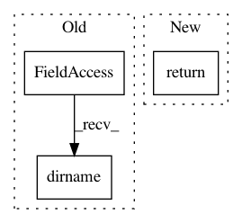

b9128f857a8d3c5aba33d21b4fa7af614ccfdffe,examples/bart_vs_bikes.py,,from_data_file,#Any#,35
Before Change
@st.cache(persist=True)
def from_data_file(filename):
dirname = os.path.dirname(__file__)
return pd.read_json(os.path.join(dirname, "data", filename))
// Grab some data
After Change
def from_data_file(filename):
dirname = "https://raw.githubusercontent.com/streamlit/streamlit/develop/examples/"
url = os.path.join(dirname, "data", filename)
return pd.read_json(url)
// Grab some data
bart_stop_stats = copy.deepcopy(from_data_file("bart_stop_stats.json"))
In pattern: SUPERPATTERN
Frequency: 3
Non-data size: 3
Instances
Project Name: streamlit/streamlit
Commit Name: b9128f857a8d3c5aba33d21b4fa7af614ccfdffe
Time: 2019-09-24
Author: monchier@users.noreply.github.com
File Name: examples/bart_vs_bikes.py
Class Name:
Method Name: from_data_file
Project Name: PetrochukM/PyTorch-NLP
Commit Name: da821b12fbb8eb8cb1d2754ad82fe5c1bb53ac48
Time: 2018-06-02
Author: petrochukm@gmail.com
File Name: torchnlp/metrics/bleu.py
Class Name:
Method Name: get_moses_multi_bleu
Project Name: streamlit/streamlit
Commit Name: da3894b5ae20d2f2851504e0fed6a946247f733f
Time: 2018-06-18
Author: armando@playground.global
File Name: lib/streamlit/config.py
Class Name:
Method Name: get_option